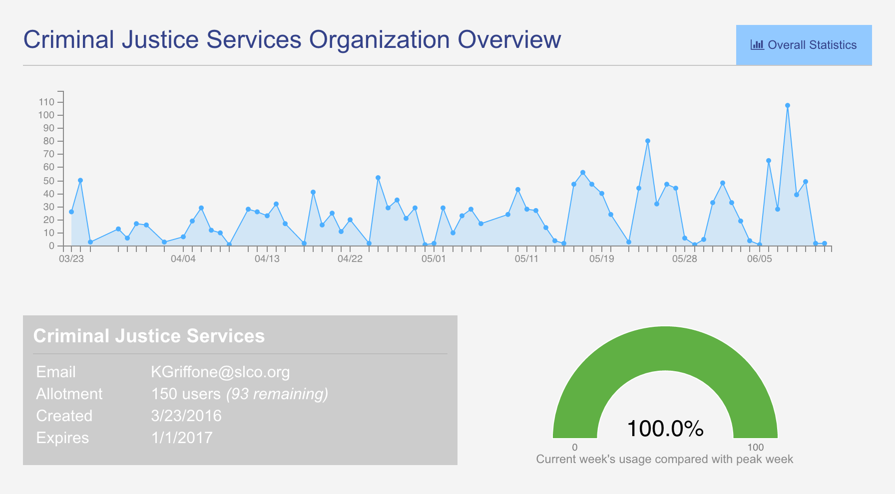

Metrics on a More Mature Platform
ClientComm has reached to a stage that we would hesitate to describe as "mature." Nonetheless, it has been thoroughly vetted at this point (as of the first week in June 2016), and has developed a workflow and user experience that has largely been solidified. In addition, the user interface has been refined and tweaked to a degree that has reached a level of formality from both the development end as well as from an institutional perspective. To elaborate, as more and more users (in ClientComm's case, case managers) begin using the tool, frequent radical changes to the interface and workflow no longer become reasonable. As more and more case managers have been trained and onboarded, it is important that future changes are implemented slowly and with clear intent. Such changes need to be natural and enable users to easily infer the intent behind modifications with no negative impact on the smoothness with which they are able to navigate through the tool.
Above image is a screen capture of current New Relic-provisioned server monitoring dashboard.At this point, front-end tools for measuring case manager use can be reasonably deployed as sustained components of the application interface make longitudinal measurement of the front end a feasible endeavor. In the case of ClientComm, for example, Keen.io was used on the front end to monitor user activity from clicks on key pages to duration of time spent by each user on the application and duration by page. In addition, because sufficient historical data has been produced through use of the application over the past two and a half months, a more robust administrative dashboard has been produced.
 Above image is a screen capture of current Keen.io-provisioned dashboarded. Keen.io provides easy to log user activity logging capacities. Using this tool will assist us in better understanding user patterns on the application frontend.
Above image is a screen capture of current Keen.io-provisioned dashboarded. Keen.io provides easy to log user activity logging capacities. Using this tool will assist us in better understanding user patterns on the application frontend.
This administrative dashboard allows supervisors to observe overall client activity as well as observe application use over the past 3 months. Included in this page are gauges and charts that help supervisors benchmark current performance against previous weeks and all-time bests. Such measures help supervisors observe ClientComm's use and how staff are using or should be using the tool. Such metrics are critical, particularly in the context of Criminal Justice Services as top-down measures of tool implementation are the norm (as is often the case in many government organization contexts).
 Latest admin dashboard features significant monitoring improvements allowing supervisors to easily consume summary statistical information regarding organization-wide utilization of ClientComm, down to individual case managers.